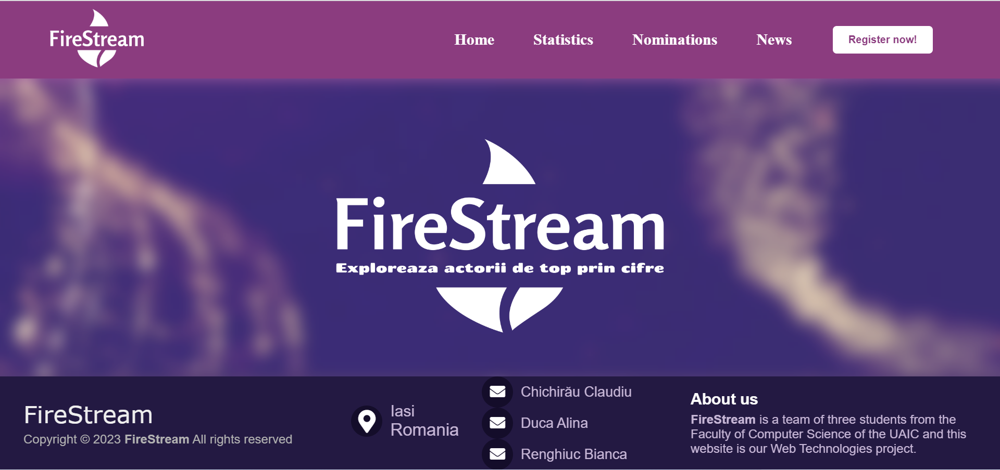
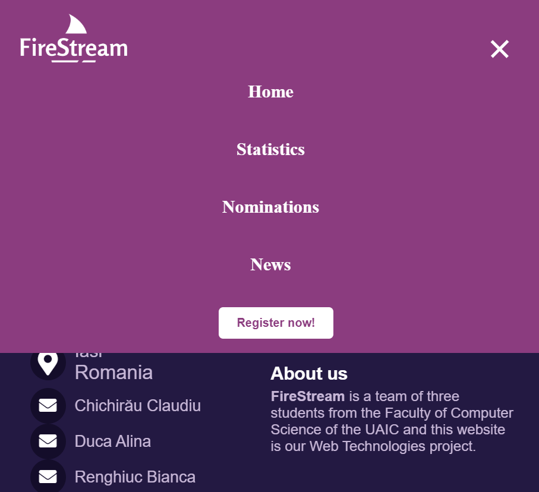

FireStream
Explorează actorii de top prin cifre.
- Rezumat
- Introducere
- Descriere generală
- Interfața aplicației
- Caracteristicile sistemului
- Cerințe nefuncționale
- Referințe
Autori
- Chichirău Claudiu Constantin
- Duca Alina
- Renghiuc Bianca Elena
1. Rezumat
Proiectul nostru reprezintă un instrument Web de vizualizare flexibilă a datelor referitoare la nominalizările actorilor la Screen Actors Guid (SAG) Awards. Utilizatorii pot vedea și accesa datele referitoare la parcursul acestora în funcție de nominalizări, de filmele în care au jucat și de fanii pe care îi are fiecare actor. Pentru a obține informații suplimentare despre fiecare actor și producție cinematografică, se va utiliza The Movie Database (TMDb) și se va dezvolta un API REST/GraphQL propriu. Utilizatorii vor putea exporta statisticile și vizualizările generate în formatele CSV, WebP și SVG, iar sistemul va oferi suport pentru redarea de știri despre fiecare nominalizat în parte, pe baza unor surse externe configurabile în cadrul aplicației.
2. Introducere
2.1 Scop
Scopul acestui proiect este de a crea un instrument web care să ofere utilizatorilor o modalitatea ușoară și flexibilă de a vizualiza și analiza datele legate de nominalizările actorilor la SAG Awards, de a obține statisticile relevante și informațiile suplimentare pentru fiecare nominalizat.
2.2 Convențiile documentului
Fontul utilizat în acest document este sans-serif, cu dimensiunea 16px. În cazul în care dorim să evidențiem anumite elemente, vom folosi bold. Fiecare punct va fi detaliat în mai multe subpuncte, numerotate sau cu marcatori, în funcție de caz.
2.3 Publicul vizat și sugestii de lectură
- Pentru dezvoltatori și testeri, secțiunile relevante pot include 3.1 Perspectiva produsulu, 3.2 Funcțiile produsului (care include o diagramă de clasă), 4.2 Interfața Hardware și 4.4 Interfața de Comunicații.
- Managerii de proiect și personalul de marketing ar putea fi mai interesați de secțiunile referitoare la 2.1 Scop, 2.4 Domeniul de aplicare al produsului și 3.2 Funcțiile Produsului.
- Utilizatorii pot găsi secțiunea 3.5 Documentația utilizatorului ca fiind cea mai utilă, în timp ce scriitorii de documentație ar putea dori să consulte 2.2 Convențiile Documentului.
2.4 Domeniul de aplicare al produsului
- Crearea unui instrument web de vizualizare flexibilă a datelor referitoare la nominalizările actorilor la premiile Screen Actors Guid (SAG) Awards.
- Furnizarea de informații suplimentare despre actori și producțiile lor cinematografice.
- Oferirea unei interfețe ușor de utilizat și a unor modalități variate de vizualizare a datelor.
- Generarea de statistici și vizualizări personalizate, în cel puțin trei moduri diferite, care permit utilizatorilor să interpreteze datele într-un mod mai intuitiv și accesibil.
- Permiterea exportului statisticilor în formatele CSV, WebP și SVG și vizualizărilor în formate ușor de prelucrat și de utilizat în alte aplicații.
- Suport pentru redarea de știri privitoare la fiecare nominalizat în parte, bazată pe surse externe de date configurabile în cadrul aplicației dezvoltate, astfel încât utilizatorii să fie la curent cu cele mai noi informații despre actori și producțiile lor.
3. Descriere generală
3.1 Perspectiva produsului
Perspectiva proiectului este de a dezvolta un instrument web util și ușor de utilizat pentru vizualizarea datelor referitoare la nominalizările actorilor la premiile SAG, oferind utilizatorilor posibilitatea de a explora aceste date în mod flexibil și interactiv. Următoarea diagramă prezintă componentele majore ale sistemului aplicației:
- Frontend - reprezintă partea vizibilă a aplicației pentru utilizator, care include interfața grafică de utilizator (User Interface), dezvoltată cu ajutorul unor tehnologii web precum HTML, CSS și JavaScript.
- API REST/GraphQL - reprezintă partea de interacțiune între frontend și backend, oferind o interfață de programare a aplicației (API) pentru accesul la date și servicii. API-ul poate fi implementat cu ajutorul protocolului REST sau GraphQL.
- Backend - reprezintă partea de procesare și stocare a datelor din aplicație, și include servicii ale aplicației și gestionarea datelor din baze de date.
- Database & Storage - reprezintă componenta de stocare a datelor utilizate de aplicație, care include baze de date relaționale și servicii de stocare în cloud.
3.2 Funcțiile produsului
Utilizatorul poate accesa paginile Statistics, News, Nominations și Register:
3.3 Clasele și caracteristicile utilizatorilor
Clasele și caracteristicile utilizatorilor care vor folosi aplicația AcVis (Actors Smart Visualizer) sunt:
- Cercetători și analiști de date - Acești utilizatori vor fi interesați de vizualizările statisticelor și de exportul de date în formatele CSV, WebP și SVG. Vor fi interesați de instrumentul web ca o modalitate de a analiza și interpreta datele referitoare la nominalizările actorilor la SAG Awards.
- Jurnaliști și scriitori de film - Acești utilizatori vor fi interesați de funcția de redare de știri privitoare la fiecare nominalizat în parte, pe baza unor surse externe de date configurabile în cadrul aplicației dezvoltate. Acești utilizatori ar putea să folosească aplicația pentru a obține informații suplimentare despre nominalizații la SAG Awards pentru a scrie articole de știri pentru propriile publicații.
- Studenți și cercetători - Acești utilizatori pot folosi aplicația pentru a obține informații și date despre nominalizările la SAG Awards în scopuri academice sau de cercetare. Instrumentul web poate fi util pentru a obține datele necesare și pentru a le analiza în mod eficient.
- Pasionați de film - Acești utilizatori vor fi interesați de a explora nominalizările la SAG Awards și de a afla mai multe despre actorii și producțiile cinematografice nominalizate. Funcția de redare de știri poate oferi informații interesante și de fundal despre nominalizații și producțiile lor.
- Publicul larg - Aplicația poate fi utilizată de publicul larg pentru a explora și înțelege mai bine nominalizările actorilor la SAG Awards. Interfața intuitivă și ușor de utilizat, precum și vizualizările grafice complexe, vor face ca informațiile să fie accesibile și ușor de înțeles pentru toți utilizatorii.
3.4 Constrângeri de proiectare și implementare
Constrangerile de proiectare si implementare pentru proiectul FireStream sunt urmatoarele:
- Limitări hardware: Este necesară o capacitate de stocare suficientă și o viteză adecvată a serverelor pentru a prelua și prelucra datele de la TMDb și pentru a oferi vizualizări rapide și eficiente. Aceasta poate necesita resurse hardware suplimentare.
- Interfețe cu alte aplicații: Pentru a prelua informații despre actori și producții cinematografice de la TMDb și pentru a oferi suport pentru redarea de știri, trebuie să se integreze cu alte aplicații. Acest lucru poate necesita un timp suplimentar pentru dezvoltarea interfețelor de programare a aplicațiilor (API) și pentru testare.
- Tehnologii, instrumente si baze de date specifice: Pentru a dezvolta aplicația, sunt necesare cunoștințe și experiența în utilizarea anumitor tehnologii, instrumente și baze de date, cum ar fi GraphQL, TMDb API și alte tehnologii web.
- Considerente de securitate: Deoarece aplicatia va prelua și va prelucra date sensibile, trebuie luate în considerare măsuri suplimentare pentru a se asigura securitatea datelor și a aplicației. Acest lucru poate include criptarea datelor, autentificarea și autorizarea utilizatorilor și testarea securității aplicației.
- Politici corporative sau de reglementare: Se va lua în considerare politica de confidențialitate și de securitate a datelor pentru a se asigura că aplicația dezvoltată respectă standardele legale și de afaceri.
3.5 Documentația utilizatorului
Pagina principală va fi afișată, cu secțiunile de nominalizări, statistici, știri și înregistrare. Pentru a accesa funcționalitățile complete ale site-ului, utilizatorul va trebui să se înregistreze. În acest sens, utilizatorul va selecta butonul de înregistrare și va completa formularul cu informațiile necesare. După finalizarea înregistrării, utilizatorul putea accesa toate funcționalitățile site-ului.
- În secțiunea de nominalizări, puteți vizualiza lista completă a nominalizărilor la SAG Awards pentru un anumit an. Pentru a vizualiza nominalizările unui actor sau a unui film, selectați numele acestora din lista afișată.
- În secțiunea de statistici, puteți vizualiza diferite statistici referitoare la nominalizările la SAG Awards. Informațiile vor fi afișate sub formă de grafice sau tabele, în funcție de opțiunile selectate.
- În secțiunea de știri, puteți citi știri recente despre nominalizările la SAG Awards. Utilizatorul poate selecta numele unui actor sau al unui film pentru a citi știrea completă.
4. Interfața aplicației
4.1 Interfața cu utilizatorul
Interacțiunile și interfața utilizatorului pentru proiectul FireStream pentru vizualizare a datelor nominalizărilor actorilor la SAG Awards ar putea fi următoarele:
- Pagina "Home"  
- Pagina "Statistics"
- Ecranul principal trebuie să afișeze diverse statistici despre popularitatea actorilor, evoluția / involuția unor actori în funcție de producțiile de film în care au jucat și impactul acestora asupra publicului larg.
- Grafice și diagrame: Utilizatorul va putea alege dintr-o varietate de grafice și diagrame pentru a vizualiza datele. Acestea pot include grafice de bare, diagrame circulare, grafice de linie etc.
- Tabeluri: Utilizatorul va putea vizualiza datele sub formă de tabel și va avea opțiunea de a sorta datele în funcție de diferite coloane.
- Filtrare și sortare: Utilizatorul va putea folosi diverse filtre pentru a personaliza vizualizarea datelor. De exemplu, utilizatorul poate filtra nominalizările după an, categorie, gen, producător etc. De asemenea, utilizatorul va avea opțiunea de a sorta nominalizările în funcție de diferite criterii, cum ar fi numărul de nominalizări, numărul de premii câștigate etc.
- Pentru exportul statisticilor, utilizatorul va avea 3 formate diferite pentru a exporta fișierul în formatele CSV, WebP sau SVG, astfel încât acestea să poată fi utilizate în alte aplicații.
- Pagina "Nominatios"
- Pe ecranul principal ar trebui să existe un meniu pentru a naviga prin categoriile de nominalizări, cum ar fi cel mai bun actor sau cea mai bună actriță în rol principal, etc. În plus, trebuie să existe un mod de căutare pentru a găsi nominalizările specifice.
- După selectarea unei nominalizări, utilizatorul ar trebui să poată vedea informații detaliate despre actor sau producția cinematografică, precum și posibilitatea de a accesa știri referitoare la această nominalizare. De asemenea, ar trebui să fie disponibilă o opțiune pentru a filtra informațiile după diverse criterii, cum ar fi anul sau studio-ul.
- Selectarea unei nominalizări pentru a accesa pagina dedicată acelei nominalizări, unde utilizatorul poate vedea mai multe detalii despre actor, producție și nominalizare.
- Pagina "News"
- Căutarea de știri: utilizatorul poate introduce un nume de nominalizat în câmpul de căutare și apăsa butonul de căutare pentru a căuta știrile care conțin numele respectivului nominalizat.
- Sortarea știrilor după data publicării sau popularitate: utilizatorul poate alege opțiunea de sortare și paginile de știri se vor reîncărca pentru a reflecta sortarea aleasă.
- Vizualizarea detaliilor știrii: utilizatorul poate da click pe titlul știrii pentru a vedea detalii suplimentare despre știre.

4.2 Interfața hardware
Următoarele tipuri de dispozitive vor fi acceptate de proiectul FireStream:
- Laptop-uri și desktop-uri care pot rula un browser web și au acces la internet.
- Tablete și telefoane mobile care rulează un sistem de operare (cum ar fi iOS sau Android) și pot accesa internetul prin intermediul unui browser web.
- Interacțiunea dintre utilizator și aplicație se realizează prin intermediul unui browser web, care este software-ul utilizatorului.
- Utilizatorul poate interacționa cu aplicația prin intermediul mouse-ului și tastaturii, în cazul laptop-urilor și desktop-urilor, sau prin intermediul ecranului tactil, în cazul tabletelor și telefoanelor mobile.
- Datele sunt preluate și afișate în interfața aplicației web, care este o interfață software.
- Aplicația utilizează protocoalul de comunicare HTTP, pentru a asigura securitatea și integritatea comunicării dintre client și server.
- Interacțiunea dintre client și server are loc prin intermediul API-ului dezvoltat intern.
4.3 Interfața software
Interfețele software ale proiectului sunt:
- API-ul REST/GraphQL propriu dezvoltat: Acesta va fi folosit pentru a prelua și trimite date între server și client referitoare la nominalizările actorilor și filmelor la SAG Awards. Acesta va avea definiții clare pentru endpoint-uri, verbe HTTP și tipuri de date acceptate și returnate.
- API-ul REST/GraphQL: Acesta va fi folosit pentru a prelua și controla datele referitoare la redarea știrilor privitoare la fiecare nominalizat în parte la SAG Awards. Acesta va avea definiții clare pentru endpoint-uri, verbe HTTP și tipuri de date acceptate și returnate.
- API-ul TMDb (The Movie Database): Acesta va fi folosit pentru a prelua informații suplimentare despre actori și producții cinematografice, care vor fi afișate pe site-ul web. Interacțiunea cu acest API va implica cereri HTTP (de ex. GET) pentru a prelua datele necesare și procesarea răspunsurilor API.
- Baza de date pentru datele utilizatorilor: Acesta va fi folosită pentru stocarea datelor utilizatorilor, cum ar fi informațiile de autentificare, preferințele utilizatorilor. Această interfață software va implica conexiunea cu o bază de date, definirea schemelor și operații CRUD (Create, Read, Update, Delete).
- Sistemele de operare și bibliotecile utilizate: Acestea vor fi folosite pentru a asigura funcționarea corectă a aplicației pe diferite platforme. De exemplu Node.js va fi folosit pentru a implementa serverul web.
- Protocoale de comunicare: Aplicația va utiliza protocoale de comunicare standard, cum ar fi HTTPS, pentru a comunica cu API-urile și cu baza de date.
4.4 Interfața de comunicații
Interfața de comunicare asociată proiectului include o serie de funcții de comunicare, cum ar fi:
- comunicare prin email, pentru trimiterea de notificări și mesaje
- comunicare prin browsere web, pentru accesarea și interacționarea cu interfața utilizatorului
- comunicare prin REST și GraphQL, pentru a interoga și accesa datele furnizate de API-ul propriu dezvoltat
- utilizarea formularelor pentru a colecta și procesa datele introduse de utilizator.
5. Caracteristicile sistemului
- Vizualizarea și analiza datelor legate de nominalizări.
- Redarea știrilor despre nominalizați din surse externe configurabile.
- Înregistrarea de noi utilizatori prin intermediul unei interfețe de înregistrare.
- Încărcarea și descărcarea fișierelor de date în format CSV.
- Generarea de fișiere grafice în format SVG și imagini WebP pentru vizualizarea datelor.
- Sincronizarea datelor cu API-ul extern al serviciului de nominalizări.
- Afișarea statisticilor privind nominalizările în timp real.
6. Cerințe nefuncționale
- Securitate: sistemul trebuie să fie securizat și să protejeze datele utilizatorilor.
- Performanță: sistemul trebuie să fie capabil să ofere o experiență rapidă pentru utilizatori, chiar și în cazul în care baza de date se va mări.
- Fiabilitate: sistemul trebuie să fie capabil să gestioneze situații de eroare și să își revină rapid.
- Interoperabilitate: sistemul trebuie sa fie capabil să se integreze cu alte aplicații și servicii, cum ar fi API-uri.
- Usability: interfața utilizatorului trebuie să fie intuitivă și ușor de folosit.
- Scalabilitate: sistemul trebuie să fie capabil să suporte creșterea numărului de utilizatori și volumul de date fără a afecta performanța.